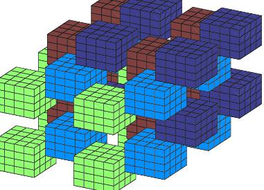

Cube packings and tilings
A cube tiling (respectively packing) is a 4-periodic tiling (respectively packing) of R^n by translates of cubes [-1,1]^n. Much of this research came from the existence in dimension 3 of a non-extensible cube packing with 4 translation classes of cubes:

For example, we prove that any cube packing with more than 2^n-4 cubes are extendible to a cube tiling. We also give lower bounds on the size of non-extendible cube packings. We also consider continuous parametrization of cube packings, which surprisingly are still amenable to combinatorial methods.